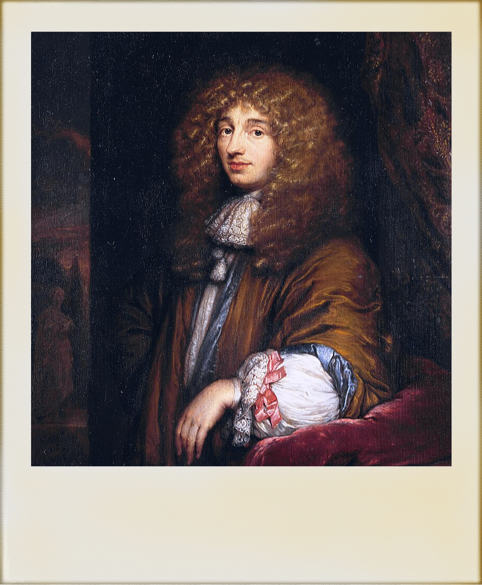

Desbravadores
Esses cientistas visionários expandiram nosso entendimento do cosmos, revelando a complexidade e a beleza
dos planetas, luas e estrelas. Suas descobertas não apenas desafiaram a compreensão existente, mas também
abriram novos caminhos para a exploração espacial.
Galileu galilei (1564-1642)
Galileu Galilei foi um dos primeiros a usar um telescópio para observar o céu.
Ele descobriu as quatro maiores luas de Júpiter – Io, Europa, Ganimedes e Calisto – em 1610, o que demonstrou que nem todos os corpos celestes orbitam a Terra.
Ele também observou montanhas e crateras na Lua, e as fases de Vênus, fornecendo evidências importantes para a teoria heliocêntrica de Copérnico. Essas descobertas desafiaram a visão geocêntrica do universo que prevalecia na época.
"E pur si muove." (E, no entanto, ela se move.)
A MAIOR DESCOBERTA DE GALILEU GALILEI
Os anéis de Saturno são uma das características mais icônicas e fascinantes do Sistema Solar. Compostos principalmente de gelo e rochas, eles se estendem por centenas de milhares de quilômetros ao redor do planeta, mas têm apenas alguns metros de espessura. Acredita-se que foram formados a partir de fragmentos de luas e cometas destruídos. Esses anéis oferecem uma visão deslumbrante e fornecem importantes pistas sobre a dinâmica e a evolução do sistema planetário.
Galileu Galilei foi o primeiro a observar Saturno com um telescópio em 1610, mas ele não identificou corretamente os anéis, descrevendo-os como "orelhas" ou "alças". Com a tecnologia limitada de seu telescópio, ele não pôde discernir sua verdadeira natureza. Apenas em 1655, Christiaan Huygens, com um telescópio mais avançado, identificou corretamente esses "apêndices" como anéis ao redor do planeta.
Johannes Kepler (1571-1630)
Johannes Kepler formulou as três Leis do Movimento Planetário, descrevendo as órbitas dos planetas como elipses, não círculos.
Ele mostrou que os planetas se movem mais rapidamente quando estão mais próximos do Sol e que há uma relação matemática precisa entre o período orbital de um planeta e sua distância média do Sol. Suas leis ajudaram a validar a teoria heliocêntrica e forneceram uma base matemática sólida para o trabalho de Isaac Newton sobre a gravitação.
"A minha intenção é mostrar que a máquina do mundo pode ser compreendida apenas através do intelecto; suas leis são matemáticas."
a maior descoberta de kepler
Kepler dedicou-se a mapear precisamente as órbitas dos planetas, começando com o mais difícil: Marte.
Ele estava convencido de que o universo era bem-ordenado porque obedecia aos planos de Deus. Estes planos podiam ser conhecidos pela humanidade, pensou Kepler, por causa de sua racionalidade e base na lógica da matemática e da geometria.
Ele tinha uma crença absoluta na harmonia cósmica – de fato, levou isso ao pé da letra ao defender que havia uma correlação direta entre a Santíssima Trindade do cristianismo e as estrelas, o Sol e o que chamamos hoje de espaço sideral.
Isaac Newton (1643-1727)
Isaac Newton revolucionou nossa compreensão do universo com sua Lei da Gravitação Universal e as três Leis do Movimento. Ele demonstrou que a força da gravidade não apenas atrai os objetos na Terra, mas também governa o movimento dos corpos celestes.
Sua obra "Principia Mathematica" estabeleceu as bases da mecânica clássica, explicando como os planetas, cometas e outros corpos se movem no espaço.
"Se vi mais longe, foi por estar sobre os ombros de gigantes."
a maior descoberta de isaac newton
Isaac Newton descobriu a gravidade ao formular a Lei da Gravitação Universal. Inspirado pela queda de uma maçã, ele percebeu que a força que atrai objetos para a Terra também governa o movimento dos corpos celestes. Em sua obra "Principia Mathematica" (1687), Newton apresentou três leis do movimento e a Lei da Gravitação Universal, afirmando que dois corpos se atraem com uma força proporcional ao produto de suas massas e inversamente proporcional ao quadrado da distância entre eles.
Essa descoberta teve um impacto profundo no entendimento do Sistema Solar. Newton explicou as órbitas elípticas dos planetas ao redor do Sol, conforme descrito pelas leis de Kepler, mostrando que a gravidade do Sol mantém os planetas em suas órbitas. Sua teoria também esclareceu o movimento das luas, como as luas de Júpiter, e as trajetórias dos cometas. Além disso, ele explicou como a gravidade da Lua e do Sol afeta as marés na Terra. A unificação da física terrestre e celeste por Newton formou a base da mecânica celeste moderna, permitindo previsões precisas dos movimentos dos corpos celestes.
William Herschel (1738-1822)
William Herschel é mais conhecido por descobrir o planeta Urano em 1781, expandindo nosso conhecimento do Sistema Solar além de Saturno.
Ele também descobriu duas das luas de Urano, Titânia e Oberon, e conduziu uma pesquisa detalhada do céu, catalogando milhares de estrelas e nebulosas. Suas observações ajudaram a expandir significativamente o mapa do céu conhecido.
"A perspicácia e a diligência são mais essenciais que instrumentos potentes."
a maior descoberta de herschel
William Herschel descobriu Urano em 13 de março de 1781, enquanto realizava uma pesquisa sistemática do céu noturno com um telescópio que ele mesmo havia construído. Herschel não era um astrônomo profissional, mas um músico que se apaixonou pela astronomia e dedicou-se a construir telescópios cada vez mais potentes.
Naquela noite, ele observou um objeto que parecia diferente das estrelas ao seu redor. Inicialmente, Herschel pensou que poderia ser um cometa devido ao seu movimento aparente. No entanto, após observações subsequentes, ele percebeu que o objeto seguia uma órbita quase circular, indicando que era um planeta.
Herschel reportou sua descoberta à Royal Society, e os astrônomos confirmaram que era um novo planeta, o primeiro identificado desde a antiguidade. Urano foi inicialmente chamado de "Georgium Sidus" em homenagem ao rei Jorge III, mas depois recebeu o nome de Urano, o deus grego do céu. Esta descoberta expandiu significativamente nosso conhecimento do Sistema Solar.
Clyde Tombaugh (1906-1997)
Clyde Tombaugh descobriu Plutão em 1930, no Observatório Lowell. Plutão foi inicialmente considerado o nono planeta do Sistema Solar, até ser reclassificado como planeta anão em 2006.
A descoberta de Plutão ampliou nossa visão sobre a fronteira externa do Sistema Solar e inspirou futuras explorações na região transnetuniana.
"Eu gosto de descobrir o que ninguém mais descobriu."
a maior descoberta de clyde
Clyde Tombaugh descobriu Plutão em 18 de fevereiro de 1930, enquanto trabalhava no Observatório Lowell no Arizona. O observatório, fundado por Percival Lowell, estava buscando um nono planeta, então chamado de "Planeta X", que Lowell acreditava estar além de Netuno.
Tombaugh utilizou uma técnica chamada "comparação de imagens" para encontrar Plutão. Ele tirou fotografias do mesmo pedaço de céu em noites diferentes e as comparou usando um dispositivo chamado "blink comparator". Este aparelho permitia ver rapidamente quaisquer mudanças entre as imagens, destacando objetos em movimento contra o fundo fixo de estrelas.
Depois de meses de trabalho meticuloso, Tombaugh notou um objeto que se movia de forma consistente nas fotografias. Este objeto foi confirmado como um novo planeta, posteriormente nomeado Plutão. A descoberta de Plutão ampliou nossa compreensão do Sistema Solar, adicionando um novo membro à família planetária e inspirando futuras explorações da região transnetuniana.
Christiaan Huygens (1629-1695)
Christiaan Huygens descobriu Titã, a maior lua de Saturno, em 1655, e foi o primeiro a explicar a verdadeira natureza dos anéis de Saturno, descrevendo-os como um conjunto de partículas pequenas em órbita ao redor do planeta.
Ele também fez importantes avanços em ótica e mecânica celeste, contribuindo significativamente para o conhecimento dos planetas e suas características.
"A verdadeira beleza da descoberta não está em encontrar novas terras, mas em ver com novos olhos."

a maior descoberta de Huygens
Huygens estava observando Saturno quando notou um ponto luminoso próximo ao planeta, que se movia em uma órbita regular. Ele identificou corretamente este ponto como uma lua e a chamou de Titã. Essa descoberta foi significativa, pois aumentou o número de luas conhecidas no Sistema Solar e destacou a complexidade dos sistemas planetários.
Galileu Galilei havia observado Saturno anos antes, mas não conseguiu entender a verdadeira natureza dos anéis, descrevendo-os como "orelhas" ou "alças". Huygens, com seu telescópio avançado, foi capaz de discernir que essas estruturas eram na verdade um sistema de anéis planos e finos em torno do planeta, inclinados em relação ao plano da órbita de Saturno.
Huygens publicou suas descobertas em sua obra "Systema Saturnium" em 1659, detalhando suas observações e suas conclusões sobre os anéis de Saturno. Sua capacidade de construir telescópios mais potentes e sua habilidade de interpretar corretamente suas observações fizeram de Huygens um dos pioneiros da astronomia moderna, contribuindo significativamente para o nosso entendimento dos corpos celestes.
Carl Sagan (1934-1996)
Carl Sagan foi um astrônomo e divulgador científico que teve um papel crucial no desenvolvimento das missões espaciais, como as sondas Voyager, que exploraram os planetas externos do Sistema Solar.
Sagan foi fundamental na popularização da ciência, escrevendo livros e apresentando a série de televisão "Cosmos", que inspirou milhões de pessoas a olhar para as estrelas e a explorar o universo.
"Somos feitos de poeira estelar. Somos uma forma de o cosmos conhecer a si mesmo."
As Conquistas de Carl Sagan
Carl Sagan fez contribuições significativas através de sua pesquisa, trabalho em missões espaciais e popularização da ciência. Ele estudou as atmosferas de Vênus e Marte, elucidando o efeito estufa de Vênus e o clima marciano. Sagan desempenhou papéis chave em missões como Mariner, Viking, Voyager e Galileo, incluindo o "Golden Record" nas Voyager.
Com seu livro e série "Cosmos," ele inspirou milhões, tornando a astronomia acessível. Co-fundou a Sociedade Planetária e promoveu a busca por inteligência extraterrestre (SETI). Sagan uniu ciência e comunicação, inspirando gerações a explorar o cosmos.
Vera Rubin (1928-2016)
Vera Rubin estudou a rotação das galáxias e descobriu que a velocidade de rotação das estrelas nas galáxias não diminuía com a distância do centro, como esperado.
Essa descoberta forneceu evidências convincentes para a existência da matéria escura, uma forma misteriosa de matéria que compõe a maior parte do universo. O trabalho de Rubin transformou nossa compreensão da composição e dinâmica do cosmos.
"Olhando para a luz das estrelas, podemos estudar a maior parte do universo que é invisível."
As Conquistas de Vera Rubin
Vera Rubin fez descobertas fundamentais sobre a matéria escura ao estudar as velocidades de rotação das galáxias espirais.
Usando espectrógrafos, ela mediu o desvio Doppler das estrelas e do gás, criando curvas de rotação que mostraram velocidades constantes, desafiando as expectativas de diminuição. Isso indicou a presença de uma grande quantidade de massa invisível, ou matéria escura. Trabalhando com Kent Ford, Rubin forneceu evidências convincentes que revolucionaram nossa compreensão da composição do universo.
Albert Einstein (1879-1955)
Albert Einstein desenvolveu a Teoria da Relatividade Geral, que revolucionou nossa compreensão da gravidade. Sua teoria descreve a gravidade como a curvatura do espaço-tempo causada pela massa e energia.
A Relatividade Geral explicou a precessão do periélio de Mercúrio e a deflexão da luz das estrelas pelo Sol, observada durante um eclipse solar em 1919. Essas descobertas confirmaram a teoria e mudaram a maneira como entendemos o universo.
"A imaginação é mais importante que o conhecimento. O conhecimento é limitado; a imaginação circunda o mundo."
Os feitos de albert einstein
Albert Einstein revolucionou a compreensão do Sistema Solar com sua teoria da relatividade geral, publicada em 1915. Ele propôs que a gravidade é a curvatura do espaço-tempo causada pela massa e energia. A teoria explicou a precessão anômala do periélio de Mercúrio, que a gravitação newtoniana não conseguia justificar. Einstein também previu que a luz se curva ao passar perto de objetos massivos, confirmado durante o eclipse solar de 1919.
Sua teoria forneceu a base teórica para a expansão do universo, descoberta por Edwin Hubble, e previu a existência de ondas gravitacionais, detectadas em 2015. Essas contribuições permitiram entender melhor os movimentos dos corpos celestes no Sistema Solar e além, corrigindo anomalias e abrindo novas áreas de pesquisa em cosmologia e astrofísica. Einstein transformou nossa visão da gravidade e do universo, impactando profundamente a ciência moderna.
Os desbravadores do Sistema Solar nos mostraram que a curiosidade e a coragem podem revelar os segredos do cosmos. Suas descobertas inspiram jovens mentes a olhar para as estrelas e sonhar grande. Além deles, muitos outros continuam essa jornada estelar. Afinal, explorar o universo é como perder suas chaves: um desafio constante, mas cada descoberta traz um brilho de satisfação científica e alegria cômica.